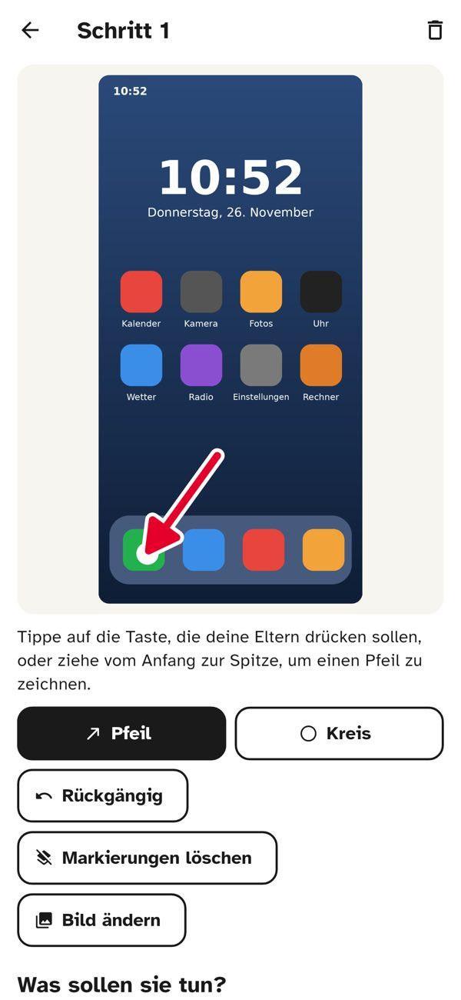
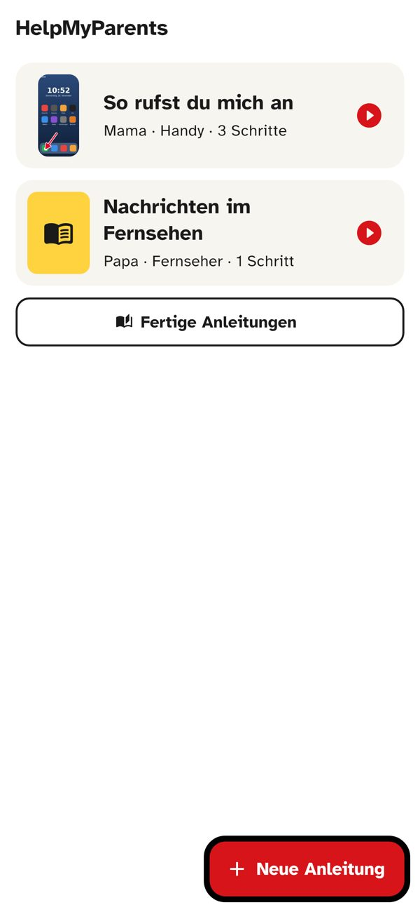
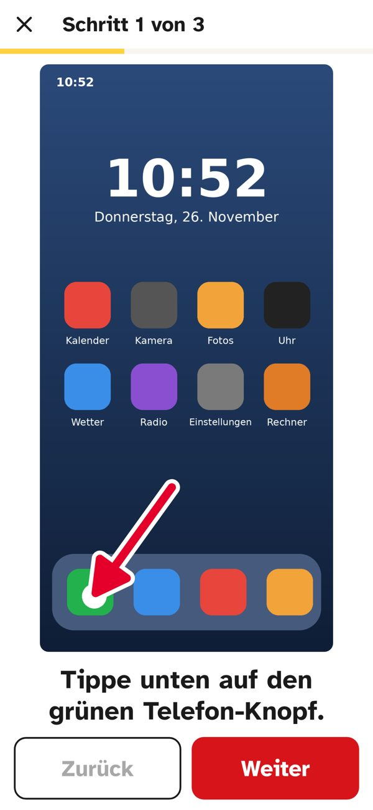

Nie wieder alles zweimal erklären.
Aus Screenshots werden Schritt-für-Schritt-Anleitungen mit großen roten Pfeilen und einfachen Worten. Deine Eltern folgen ihnen allein und in Ruhe.
Bald im App Store und bei Google Play
So funktioniert es
- Screenshot hinzufügen oder Fernseher bzw. Computer fotografieren.
- Dorthin tippen, wo gedrückt werden soll. Ein großer roter Pfeil erscheint.
- Für jeden Schritt einen kurzen Satz in großer Schrift schreiben.
- Als PDF zum Ausdrucken oder als Bilder per WhatsApp, Nachrichten oder E-Mail senden.


Für Senioren gemacht
Sehr große Schrift, ein Schritt pro Bildschirm, riesige Zurück- und Weiter-Knöpfe.
Fertige Anleitungen
Starte mit Anleitungen für Videoanrufe, Anrufe annehmen, größere Schrift oder TV-Untertitel.
Privat
Deine Anleitungen bleiben auf deinem Handy. Kein Konto, keine Werbung, kein Tracking.
Funktioniert offline
Anleitungen ohne Internet erstellen und zeigen. PDF ausdrucken und neben den Fernseher legen.
Preis
Deine erste Anleitung ist kostenlos. HelpMyParents Plus bietet unbegrenzt viele Anleitungen: 7 Tage gratis, danach 4,99 € pro Monat oder 39,99 € pro Jahr (33 % sparen). Jederzeit in den Store-Einstellungen kündbar.
Hilfe und Kontakt
Fragen oder Ideen? Schreib uns, wir beantworten jede E-Mail.
parentshelpmy@gmail.com